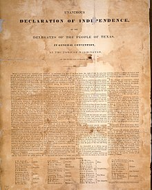

Two months ago in October, Mexican Texas instigated the Texas Revolution. The goal of the revolution was unclear, either being more liberties or complete independence from Mexico. The delegates, mainly from the War Party, in the Texas Council this year were determined that Texas become independent. Five delegates of the committee were chosen to draft the independence declaration. The declaration had unanimous approval and 60 men signed it, establishing The Republic of Texas. Mexico still currently claims the land and calls the delegated unjust trespassers and invaders. However, tensions between the new republic and Mexico seem to be on a decline as the American government is planning to officially recognize Texas and make peace.
The delegates chose David Burnet as provisional president and confirmed Sam Houston as the commander in chief of all Texan forces. The Texans also adopted a constitution that protected the free practice of slavery, which had been prohibited by Mexican law.
Meanwhile, in San Antonio, Mexican General Antonio Lopez de Santa Anna’s siege of the Alamo continued, and the fort’s 185 or so American defenders waited for the final Mexican assault.
Background
In 1820, Moses Austin, a U.S. citizen, asked the Spanish government in Mexico for permission to settle in sparsely populated Texas. Land was granted, but Austin died soon thereafter, so his son, Stephen F. Austin, took over the project. In 1821, Mexico gained independence from Spain, and Austin negotiated a contract with the new Mexican government that allowed him to lead some 300 families to the Brazos River. Under the terms of the agreement, the settlers were to be Catholics, but Austin mainly brought Protestants from the southern United States. Other U.S. settlers arrived in succeeding years, and the Americans soon outnumbered the resident Mexicans. In 1826, a conflict between Mexican and American settlers led to the Fredonian Rebellion, and in 1830 the Mexican government took measures to stop the influx of Americans. In 1833, Austin, who sought statehood for Texas in the Mexican federation, was imprisoned after calling on settlers to declare it without the consent of the Mexican congress. He was released in 1835. In 1834, Santa Anna, a soldier and politician, became dictator of Mexico and sought to crush rebellions in Texas and other areas.